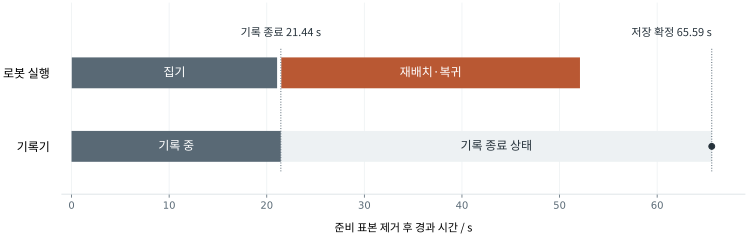

개발 범위
기반 기술과 구현 모듈
FR5 로봇과 기존 로봇·학습 소프트웨어를 사용한다. 프로젝트에서는 작업 조건을 수집 계획으로 바꾸는 실행기, 다중 센서 기록기, 데이터 검토 화면과 학습 입력·평가 모듈을 구현했다.
| 기반 기술 | 담당 기능 | 프로젝트 구현 |
|---|---|---|
| FR5 · ROS 2 MoveIt 2 | 로봇 인터페이스와 동작 계획·궤적 실행 | 수집 조건과 작업 순서, 반복 실행, 작업별 기록 구간 |
| LeRobot | 데이터셋 형식과 데이터 로더·학습 실행 | FR5 센서 시간 정렬, 품질 검사, 데이터 선별과 TRAIN 정규화 연결 |
| SmolVLA | 사전 학습된 시각·언어·행동 모델 | 수집 데이터로 미세 조정, 학습 조건 비교와 관절별 오차 분석 |
| Rerun | 동기화된 영상·신호 탐색 타임라인과 그래프 | 검토 대상 연결, 원본 프레임 대응, 데이터 일치 확인과 검토 복귀 |
실행 제어와 데이터 저장의 분리
이 시스템에는 서로 다른 속도로 끝나는 두 작업이 있다. 로봇은 궤적을 따라 움직이고 안전한 자세로 복귀해야 한다. 기록기는 그동안 받은 영상과 신호를 압축하고 파일·메타데이터를 확정해야 한다. 로봇 동작이 끝난 시각과 데이터 저장이 끝난 시각은 같지 않다.
작업 실행기는 한 번에 하나의 동작과 작업 순서를 관리한다. 기록기는 표본 수집·버퍼·저장을 맡고, 둘은 시작·기록 종료·저장 확정 같은 명령과 상태로 연결된다. 기록 종료 뒤에도 복귀 동작을 수행할 수 있으며, 저장 작업이 오래 걸린다는 이유로 같은 로봇 동작을 다시 시작하지 않는다.
저장할 데이터는 먼저 임시 영역에 준비한다. 실행 종료와 필요한 조건을 확인한 뒤 저장을 확정하고, 검증 결과를 원래 수집 계획과 연결한다. 이 경계를 두면 성공적으로 저장된 데이터와 중간에 중단된 작업을 구분할 수 있고, 저장 응답이 늦을 때도 실제 완료 상태를 확인해 복구할 수 있다.
실제 운용
집기 시연의 실행·저장 시간
실제 집기에서는 들어 올리기가 끝난 뒤 기록을 종료하고, 로봇의 재배치·복귀와 데이터 저장을 이어서 처리했다. 다음 그림은 같은 작업에서 두 모듈이 상태를 전환한 시각이다.

집기 직후 기록을 종료하고, 재배치·복귀는 기록 밖에서 실행했다. 로봇 실행과 기록기 상태를 따로 관리해 학습할 작업 구간만 데이터로 남긴다.
작업별 기록 구간 살펴보기 ↗운영 화면
운영 화면과 상태 관리
운영 화면은 서버의 현재 상태를 표시하고 사용자 명령을 전달한다. 로봇 실행과 데이터 저장 상태는 서버가 관리한다.
화면에 보이는 상태에는 버전 번호와 내용 해시가 붙는다. 사용자가 명령을 보낼 때 서버는 그 상태가 아직 유효한지 확인한다. 다른 요청으로 상태가 바뀌었다면 오래된 화면의 명령을 실행하지 않는다. 이는 동시에 변경된 내용을 덮어쓰지 않는 낙관적 동시성 제어이다.
브라우저 연결이 끊겨도 작업의 상태는 서버와 실행 기록에 남는다. 재접속하면 현재 상태를 다시 읽으며, 응답을 받지 못했다는 이유만으로 수집 명령을 반복하지 않는다. 화면은 조작 창을, 서버는 실행 상태의 기준을 맡는 구조이다.
단일 운영자 PC를 전제로 한다. 브라우저 채널 토큰은 사용자 신원 인증이나 학습 사용 권한을 대신하지 않는다.
수집 분석·추천
수집 분석·추천 모듈
수집 조건별 coverage를 분석해 다음 수집 조건을 제안한다. 추천은 작업 초안의 변경 요청으로 변환하며, 실행 권한은 기존 수집 모듈에서 별도로 확인한다.
기존 production 수집 기록 하나를 직접 입력했을 때에는 과거 계획 근거가 없어 UNAVAILABLE을 반환했다. 추천 적용의 코드·합성 데이터 검증과 실제 수집 기록의 적용 여부를 구분한다.
학습 정책의 실물 실행부터 재수집·재학습 효과까지 이어지는 폐루프는 미검증 범위이다.